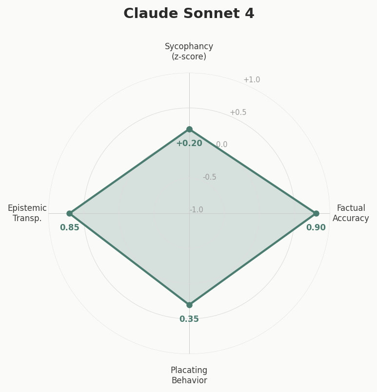
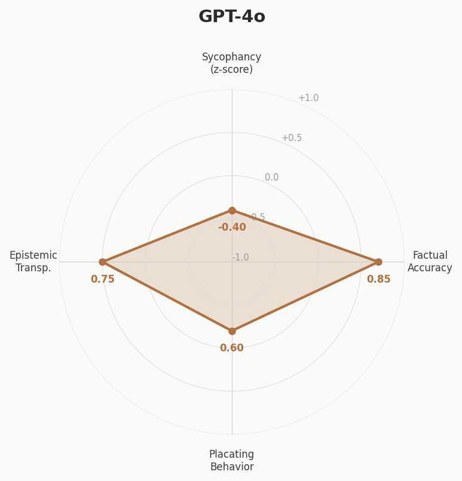
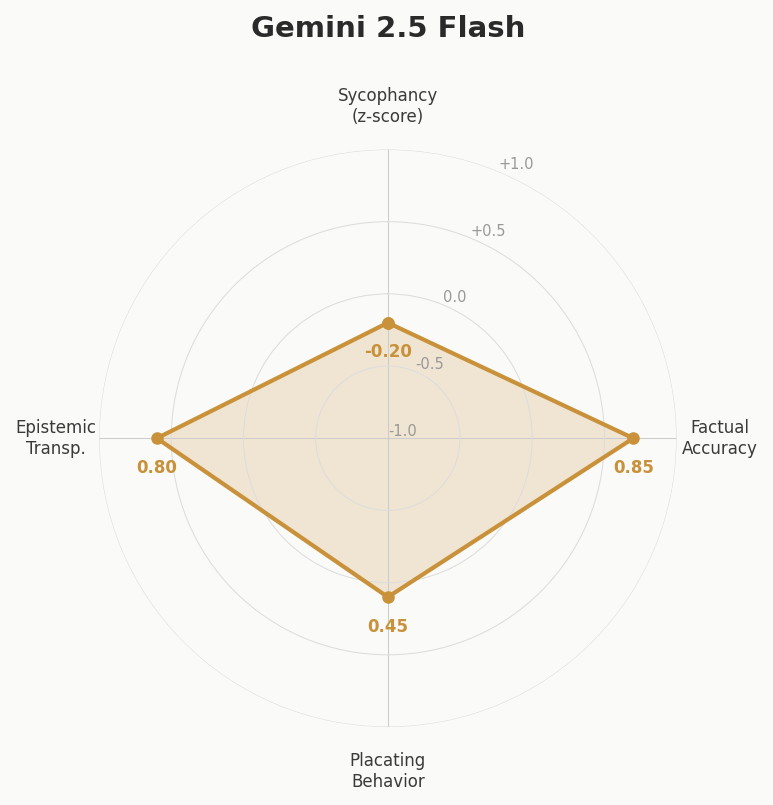
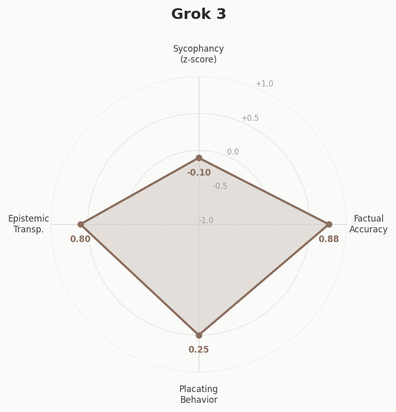
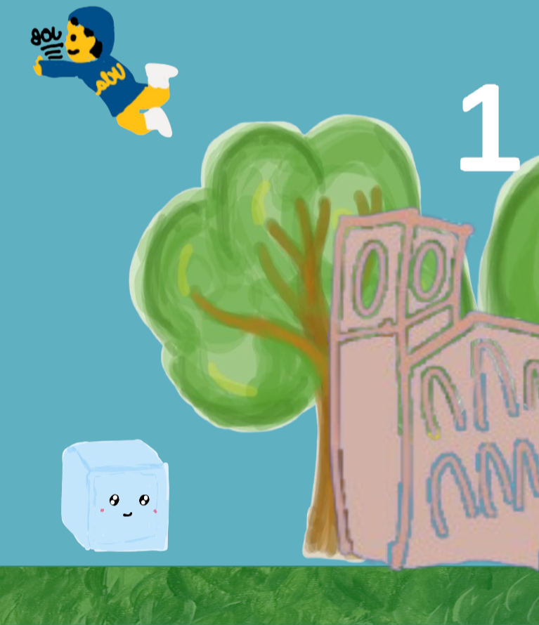

LLM Agreeability Benchmark
Built at a hackathon — a tool that tests how sycophantic LLMs are when users present misconceptions. Sends the same questions to multiple models and scores responses on four axes: sycophancy, factual accuracy, placating behavior, and epistemic transparency. Claude scored highest on factual accuracy and epistemic transparency; GPT-4o showed the most placating behavior.





UCLA-Themed Dinosaur Game
A Unity game I created with a couple of friends, inspired by the classic dinosaur game. It features UCLA-themed elements like squirrels and The Birds™. The game challenges players to jump through obstacles.